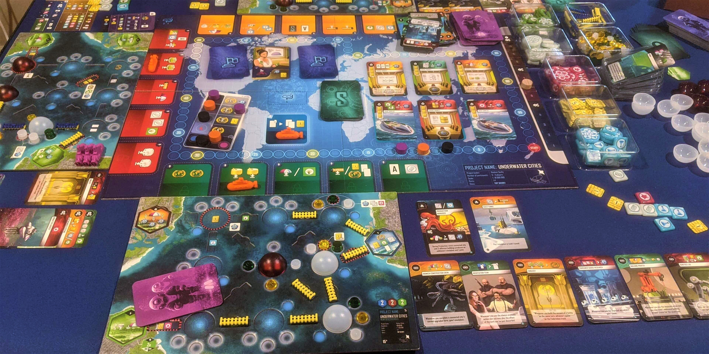

If you like Terraforming Mars, try these 3 games


Terraforming Mars is an awesome engine-building card game with endless strategies and card combos to pursue. Every game feels different, and it's very satisfying to improve at this game.
Complexity and strategic diversity are some of Terraforming Mars's best traits, and these are also found in the games we're recommending below.
However, if you just want more Terraforming Mars, there are also several great expansions to try! We rarely list out all of a game's expansions, but this game deserves it.
- Prelude adds starter cards to increase starting production and resources. We'd never play without this one!
- Hellas and Elysium are two new boards with new milestones and awards. Good for all players.
- Venus Next adds new cards and a Venus track which can also be terraformed. This one is great after you've played the base game a few times.
- Colonies provides more ways to spend and gain resources. Great for advanced players.
- Turmoil adds politics, and special bonuses are applied by the ruling party in power. Expert players only - increases difficulty and game length.
Underwater Cities

Underwater Cities is another engine-building card game, this time with worker placement. Rather than competing to place tiles on the board like in Terraforming Mars, you'll send your submarine to action spaces that can be used only once each round.
Each space lets you improve your underwater metropolis. One space allows you to build habitable domes, another space lets you connect them with tunnels, and other spaces allow you to upgrade your buildings or gain resources. All of your buildings produce resources, but unlike Terraforming Mars, production happens only 3 times in this game! Timing your actions is very important but hard to master.
You may also play a card that matches your space's color to gain its bonus - often more resources or a special action. However, your hand size is only 3, which adds a challenging limit to how well you can plan ahead. You will find your strategy change throughout the game based on the cards you have.
Underwater Cities will flex a similar part of your brain with hundreds of effective card combos to try. This is a great game to play after Terraforming Mars, especially if you're intrigued by more persistent player interaction that comes with the worker placement aspect.
Buy Underwater Cities on Amazon
It's a Wonderful World

It's a Wonderful World is a straightforward engine building game that takes less than an hour to play but really gets your brain working. This game focuses purely on card drafting and resource production, so this game is for you if that's what you love about Terraforming Mars.
Every card costs various colored cubes to activate, and you start off producing only the few shown on your starter corporation. Early on, you will likely focus on cheaper cards that increase your production levels, until you can afford more expensive cards that grant loads of victory points (sound familiar?). However, you'll constantly have to weigh your options and will be forced to take risks, as drafting ensures you won't know which cards will turn up.
This is a great strategy game that packs a punch for how simple its gameplay is. Simultaneous turns and quick setup make this a great option for any group, big or small. Definitely check this one out if you're looking for something lighter to balance with Terraforming Mars!
Buy It's a Wonderful World on Amazon
Great Western Trail

Great Western Trail is a deck-building game where you move along a trail of buildings in the Old West to ultimately deliver cattle in Kansas City. This game has very different mechanics compared to Terraforming Mars, but it has that same satisfying feeling when you start getting the hang of it.
The game takes place on a path with several buildings, and you stop at one each turn. Every building lets you perform a different action - hire workers, buy cattle, create new buildings, or discard cards from your hand for money. When you reach the end of the trail, you deliver all of the uniquely colored cows in your hand - the more unique, the better your reward. You then move back to the start, independent of everyone else. It's up to you if you'll move slowly or rush through!
In some games, you may focus on adding better buildings that only you can use. In others, you may focus on buying better quality cows to make more profitable deliveries. Or maybe you'll do a mix of both. Your strategy will depend on which tiles, workers, and building appear during setup.
Great Western Trail feels very different from other games, in large part to how the trail evolves throughout the game. This game feels impossible to "solve," and it's a great option if you want a heavy strategy game that contrasts well with Terraforming Mars.
Buy Great Western Trail on Amazon
Honorable Mentions
If you've already played the games above or want some more to choose from, you also might like these options!
Wingspan is another awesome engine-building game that has hundreds of unique cards, and it's centered around beautifully illustrated birds. You'll feed birds to add them to your habitat board in order to use their special powers, and these powers can chain together every time you use an action! You can achieve some satisfying cascading combos this way, just like in Terraforming Mars. Wingspan is certainly a lighter game, but it still has great strategic depth for its shorter time frame.
Buy Wingspan on Amazon7 Wonders (with the Armada Expansion) is a card drafting game with simultaneous turns. Each card you play has a different effect and could bolster your military power, improve your scientific research, or increase your resource production. With the Armada expansion, you may also advance up a track matching your card's color to gain more bonuses, adding to the strategy! Whether you're a 7 Wonders Veteran or haven't played before, this is a great game to try. Also, consider teaching 7 Wonders to friends who haven't played Terraforming Mars yet, as a nice introduction to card drafting.
On Mars turns the process of establishing a colony on Mars into a worker placement board game. The mechanics in this game are precise, and the objectives and constraints are highly thematic. The actions available to you depend on whether you're currently on the Surface or in Orbit, and you'll frequently shuttle between the two throughout the game. If your group is looking for something even more complex than Terraforming Mars, this may be the game for you. On Mars does come with a higher price tag, but the component quality is the best in the industry, featuring double-layer player boards, beautiful wooden pieces, and exceptional graphic design.
Buy On Mars on AmazonTerraforming Mars: Ares Expedition is a spin-off of Terraforming Mars that has simultaneous turns. When you select an action, all players may take that action - if everyone picks Production, everyone will produce, but nobody can build anything! You'll need to anticipate what your opponents will need for themselves and plan accordingly. If you're a Terraforming Mars junkie, this game may not fully satisfy your craving to pull off a beautifully crafted titanium-spacetag-energy-heat engine, but it does have new cards and mechanics to master. Some of our friends now prefer Ares Expedition for its simultaneous turns, as it takes much less time than the original game.
Buy Terraforming Mars: Ares Expedition from TargetBeyond the Sun combines resource management with planetary conquest, and it's played on a massive tech tree, in space. You need Civilians to research new technologies, and you need Ore to use special actions, such as deploying and moving ships to new planets. When researching technologies, you can open up new space-faring actions for yourself later, or even increase your Civilian growth or Ore production. Beyond the Sun is relatively quick to play, is much less complex than Terraforming Mars, and the tech tree is randomized between games, making it quite replayable.
Beyond the Sun on Board Game AtlasWant more recommendations or have feedback for us? Send an email to support@spiralburst.com and we'll get back to you!